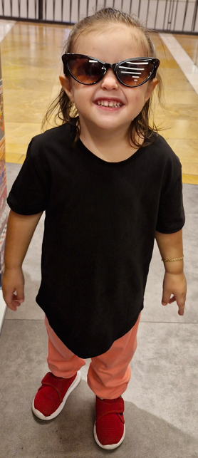

Volkan Güngör
Yönetim Bilişim Sistemleri Doktora Öğrencisi. Dijital dönüşüm ve ağ yönetimi konularıyla ilgileniyor.
Profili GörYönetim Bilişim Sistemleri Doktora Öğrencisi. Dijital dönüşüm ve ağ yönetimi konularıyla ilgileniyor.
Profili Gör
Anaokulu Öğrencisi. Youtube Kids ve ebeveyn yönetimi konularıyla ilgileniyor.
Profili Gör